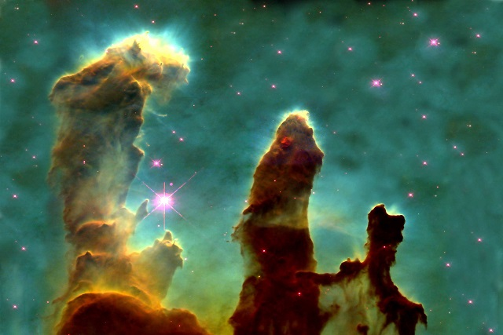

Stars are massive, glowing balls of hot gas—mostly hydrogen and helium—that generate energy through nuclear fusion in their cores.
Nuclear fusion is a chemical process in which Hydrogen (H2) atom fuses into Helium (He) atom, and then Helium gets converted to a more heavier element, carbon.
Life Cycle of Stars
Birth
Stars are formed in a stellar nursery, also known as molecular clouds. They range 1,000 ~ 10 million times the mass of our Sun!Composed primarily of molecular hydrogen (H₂), along with helium and trace amounts of other molecules like carbon monoxide, these clouds are the only places in the universe where molecules can exist in large quantities. Their low temperatures—often just 10 to 30 Kelvin—allow gas and dust to clump together under gravity. As these clumps grow denser, they can collapse to form protostars, eventually igniting nuclear fusion and becoming full-fledged stars. Molecular clouds often appear as dark patches against the starry background because their dust blocks visible light, but they glow brightly in infrared and radio wavelengths. Famous examples include the Orion Molecular Cloud and the Taurus Molecular Cloud, both active star-forming regions. These clouds are essential to understanding how stars and planetary systems form and evolve across galaxies

" Stars are born inside big clouds of gas and dust called molecular clouds. These clouds are cold and dark, but sometimes parts of them start to shrink because of gravity. As the gas gets pulled together, it forms a ball that gets hotter and hotter. This ball is called a protostar. When it gets hot enough, the gas inside starts to change—hydrogen turns into helium, and this makes energy. That energy makes the star shine. Once this happens, the star is fully formed and begins its life, glowing in space for millions or even billions of years.
Life
A star’s life is like a long story in space. It starts as a tiny ball of gas inside a big cloud. Slowly, the gas comes together and forms a baby star. This baby star gets hotter and brighter until it starts shining. That’s when it becomes a real star.

The star then spends most of its life shining by burning its fuel, which is mostly hydrogen. This can last for millions or even billions of years. When the fuel starts to run out, the star changes. If it’s a small star like our Sun, it becomes big and red, then shrinks into a small, white star that slowly fades away. If it’s a big star, it can explode in a huge blast called a supernova and become something very strange like a black hole.
So, a star is born, shines for a long time, and then ends in a quiet fade or a big bang—depending on how big it is.
Death
When a star is getting old, it runs out of its main fuel — hydrogen. Without that fuel, the star can't keep its balance, so its center (called the core) starts to shrink. But as it shrinks, it gets hotter, and that heat makes the outer part of the star swell up and become bigger. What happens next depends on how big the star is.
For small stars like our Sun:
- The outer layers keep expanding and the star becomes a giant.
- Inside, helium turns into carbon.
- The star might start shaking and puffing out bits of gas.
- In the end, the outer parts fly away and form a glowing cloud called a planetary nebula.
This is what will happen to our Sun — but not for billions of years!

Heavy stars, like 15~20 solar masses of our sun become either a neutron star or a black hole!
*Some of the parts of the website is inspired by NASA's official website* Designing ideas credit goes to NASA (Respect!)